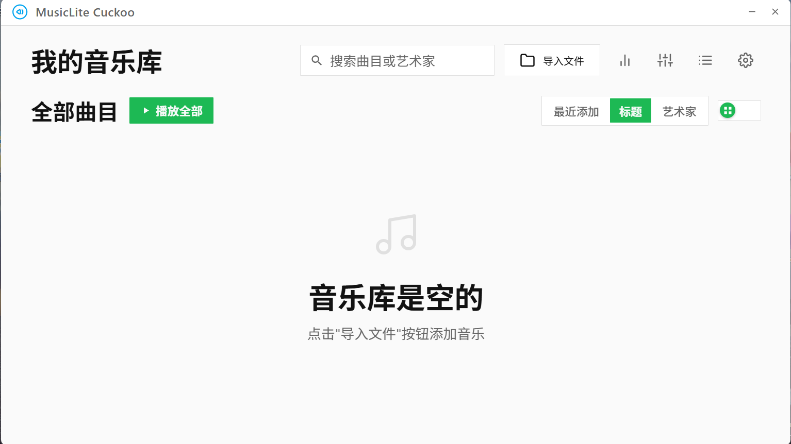
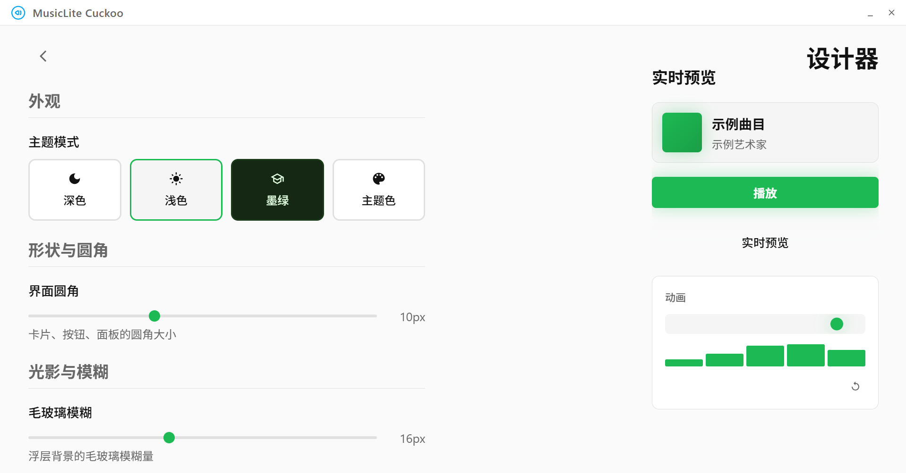
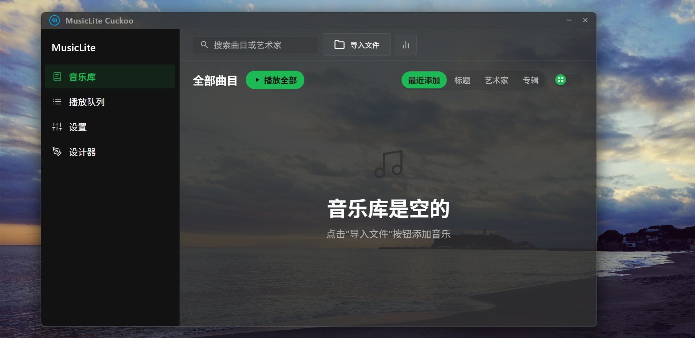

从 GitHub 仓库拉取最新 release 标题与说明。
从媒体库管理到歌词显示，从全局控制到数据迁移，每一项功能都围绕"本地优先"的使用场景设计。
内置设计器实时调整圆角、模糊、阴影、辉光与动画级别等视觉令牌。支持透明背景与自定义背景图片或视频，无需修改代码即可改变外观。
支持 LRC 格式歌词，提供卡片与全屏两种显示模式，可在淡入淡出、滑动、缩放、翻转、旋转等多种行切换动画间切换。
拖拽排序、随机播放、从媒体库批量添加，队列内支持直接拖放。关闭主窗口时最小化至托盘，播放不被打断。
可自定义播放/暂停、上一曲、下一曲的全局热键，应用处于后台或最小化状态时仍可响应，无需切回窗口。
内置中文与英文界面，翻译数据随应用分发。提供扩展机制，用户可自行添加或修改翻译条目。
一键打包设置与字体为 .msclte.zip 压缩包，在新设备上导入即可还原全部偏好，便于在多机环境间同步配置。
Windows 下支持应用级音量合成器控制，仅调节本程序音量而不影响系统其他进程；也可切换为系统主音量模式。
自绘托盘菜单，支持后台播放与快速操作。关闭主窗口默认最小化至托盘，退出需通过托盘菜单显式确认。
将曲目、封面、歌词嵌入 ID3v2 标签并复制到剪贴板，单文件即可携带完整元数据，便于传输与分享。
记录每首歌曲的累计播放时长，本地存储，可按曲目查看个人 listening 历史，数据不外传。
传统 UI 偏向稳定的控件布局，新风格 UI 采用更紧凑的间距与半透明质感。两套风格共享同一套设计令牌，切换不会丢失任何数据。



解码能力基于 FFmpeg，早期版本（Cuckoo Beta0.6.4 及以前）仅支持三种基础格式，后续版本扩展至十四种。
| 格式 | 至 Cuckoo Beta0.6.4 | Cuckoo Beta0.6.4 之后 |
|---|---|---|
| MP3 | 完整支持 | 完整支持 |
| WAV | 完整支持 | 完整支持 |
| FLAC | 完整支持 | 完整支持 |
| AAC | 不支持 | 完整支持 |
| OGG (Vorbis) | 不支持 | 完整支持 |
| OPUS | 不支持 | 完整支持 |
| WMA | 不支持 | 部分支持 |
| AIFF | 不支持 | 完整支持 |
| AMR | 不支持 | 完整支持 |
| AC3 / E-AC3 | 不支持 | 完整支持 |
| DTS | 不支持 | 完整支持 |
| ALAC | 不支持 | 完整支持 |
| APE | 不支持 | 仅解码 |
| TTA | 不支持 | 仅解码 |
核心由 Go 与 Wails v3 构成，音频解码依赖 FFmpeg。所有依赖均为开源项目。
可下载预编译版本直接运行，也可从源码自行构建。源码构建需要先准备 Go、Node.js 与 CGO 依赖。
CGO 依赖因平台而异：
构建产物位于 build/bin/ 目录。